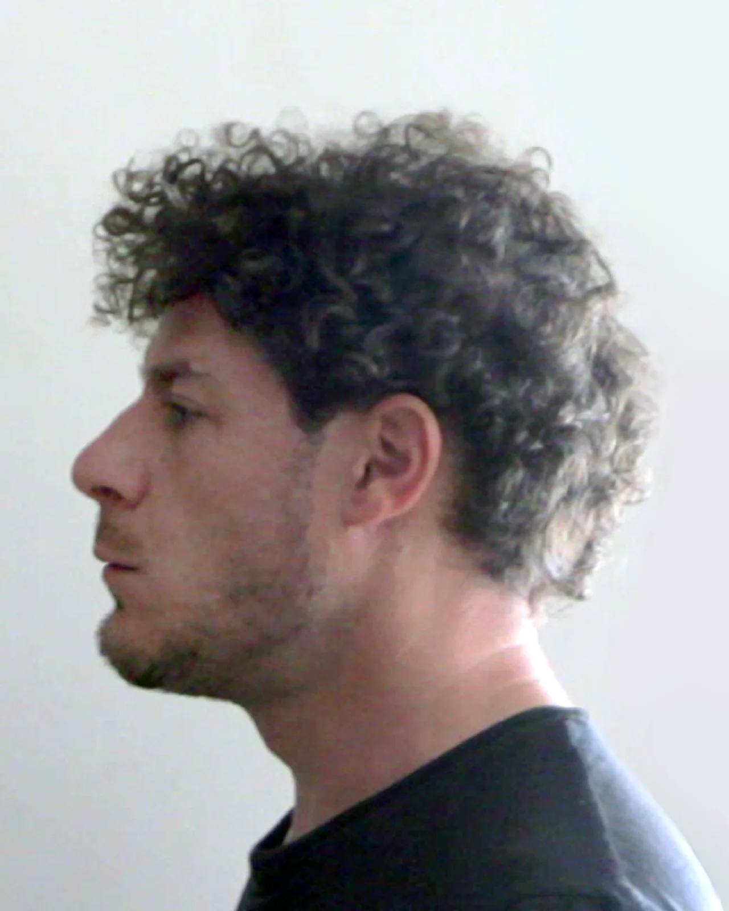
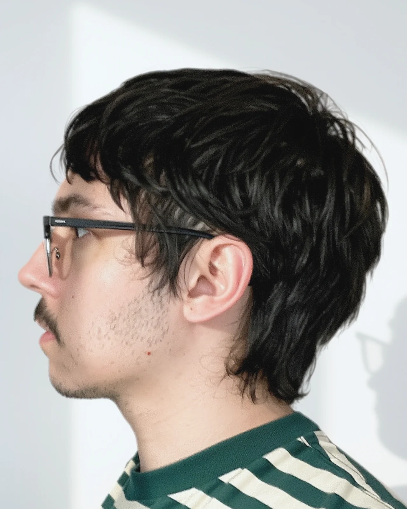
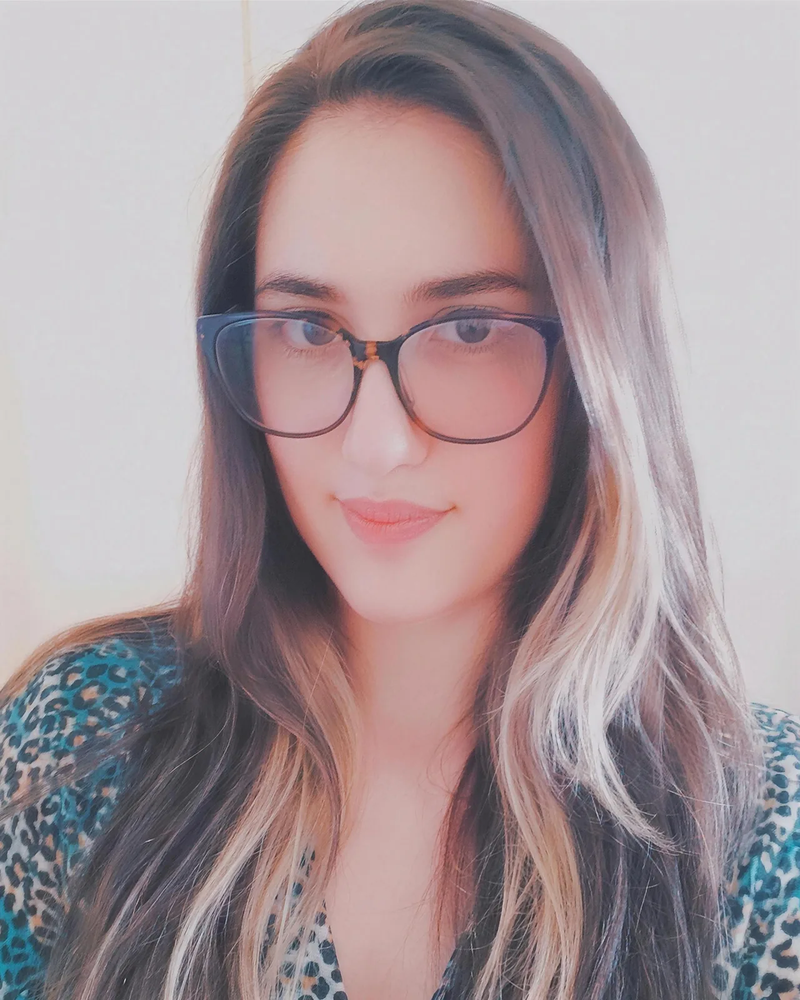

PRO-FILI Festival
Gli altri artisti

Enrico Buoso
Musica e composizione
Intrecci di note e reti di persone.

Martino Prendini
Arti visive
Esplora con i sensi quello che non si scopre in altro modo.

Daniele Corrain
Pittura e illustrazione
Dipinge quello che gli passa per la testa, sporcandosi le mani.

Giulia Dal Prà
Collage
Ritaglia, accosta e ricompone quello che gli altri hanno smesso di guardare.